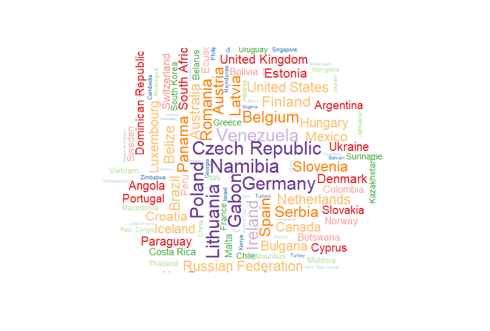
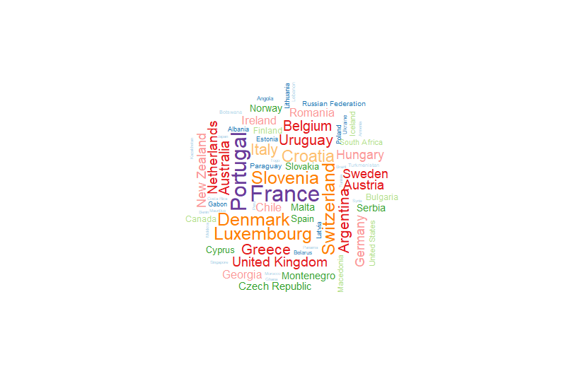
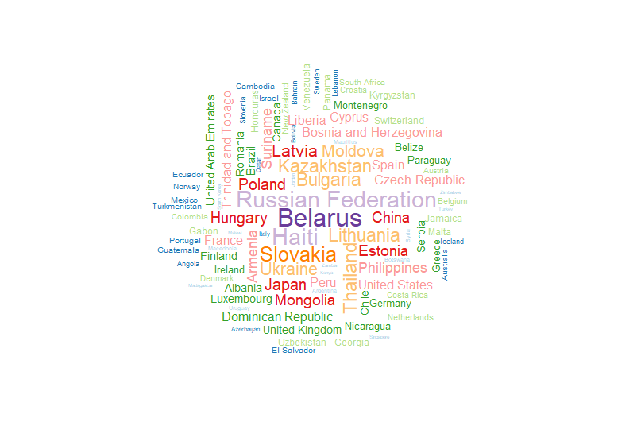
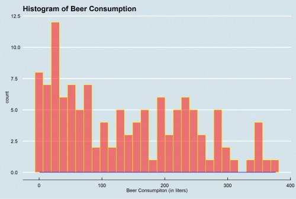
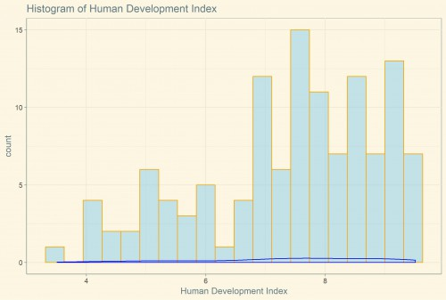

The dataset contains 11 columns: country, region, hemisphere, mental healthiness, rank of mental healthiness, human development index, beer consumption, wine consumption, spirits consumption, and life expectancy.
I also created new features by bins, factors, and percentages for convenience.
Among these factors, the project aims to find a correlation among alcohol consumption and health(mental and physical).
First of all, I wanted to learn which country drinks most and least. When we think of vodka(one of spirits), the first thing comes is vodka-drinking Russians.
What about beer? Germany has a famour beer festival, Oktoberfest, every fall. Would Germany be the country that drinks beer most?
France, Italy, and Argentia are one of the best wine producers in the world. Would they also drink as much as they product? What do you think?
You can check these out from the following wordclouds.
Beer

Wine

Spirits

Figure 1,2,3: Wordclouds of Countries by beer, wine, spirits consumption.
Created with: R
I learned that Eastern European countries such as Germany, Czech Republic, and Belgium have the highest beer consumption
while Russia and Belarus are the highest spirits-drinking regions.
Not only France but also Portugal and Switzerland have the highest wine consumption.
Now, I wanted to see all three combined in one plot. The following figure is a dot plot of three different alcohol consumption.
Figure 4: Dot Plot of beer, wine, spirits consumption by country.
Also available here.
Created with: R, Plotly
By using shiny app, I was able to look at the distribution of beer consumption by adjusting the number of bins too.
Figure 5: Shiny App of Beer Consumption
Also available here.
Created with: R, Shiny
Now, let's check out the distribution of some columns of our data.
Among many different columns, I wanted to take a look at beer and Human Development Index(HDI).
The Human Deveopment Index(HDI) was created to emphasize that people and their capabilities should be the ultimate criteria for assessing the development of a country,
not economic growth alone.
The HDI can also be used to question national policy choices, asking how two countries with the same level of GNI per capita can end up with different human development outcomes.
These contrasts can stimulate debate about government policy priorities.
Human Development Index (HDI) is a summary measure of average achievement in key dimensions of human development: a long and healthy life, being knowledgeable and have a decent standard of living. The HDI is the geometric mean of normalized indices for each of the three dimensions.
Thus, HDI can be considered as a measure of well-being life.
Beer

Human Development Index

Figure 6,7 : Histogram of Beer Consumption and HDI
Created with: R, ggplot2
The following is a leaflet map created with R that shows the countries whose alcohol consumption
including beer, wine, and spirits are high
as colored in light blue on the map.
Also, from the map, you will be able to see some popups with the note of the corresponding information of the countries.
Figure 8: Leaflet map that shows high alcohol consumption with some notes
Also available here.
Created with: R, Leaflet
Everyone knows drinking too much can be bad for you — but that public health discussion doesn’t usually take into account how much fun it is to throw back a bottle of beer.
While alcohol can cause big problems for our physical and mental health when consumed for a long time of period, it has a positive impact on our mood such as happy hour, birthday, and family gathering.
Personally, our family has allowed me to taste a sip of wine since I was 10; they consider wine as a pairing beverage rather than "alcohol".
Thus, the way I think of drinking is something like "happy gathering", "friends", and "parties" rathern than "binge drinking" or "party monster".
This page will explore additional columns of the dataset including mental healthiness and life expectancy.
First of all, I wanted to take a look at the relationship between mental healthiness and life expectancy.
At the same time, I colored the each data point by five different level of beer consumption.
Figure 9: Scatter Plot of Life Expectancy and Mental Healthiness binned by Beer Consumption level
Also available here.
Created with: R, Plotly
From the following facet plot, you can learn more details about mental healthiness, human development, and beer consumption.
One of the advantages of facet plot is to give you more more deatailed picture of the graphs as it is divided by five different parts
Figure 10: Facet Plot of Mental Healthiness and Human Development Index binned by Beer Consumption level
Created with: R, ggplot2
Lastly, I also created a scatter plot of life expectancy, mental healthiness and wine consumption.
It is interesting to note that all of the indicators do not seem to have a strong correlation with each other.
Figure 11: Scatter Plot of Life Expectancy, Mental Healthiness, Wine Consumption
Also available here.
Created with: R, Plotly
As discussed earlier, it is well-known that heavy drinking can cause problems with the digestive system, such as stomach ulcers, acid reflux, heartburn, and inflammation of the stomach lining, known as gastritis
Despite many researches out there, I would like to see the relationship between alcohol consumption and physical health by looking at the life expectancy. Would alcohol consumption reduce our life expectancy? Would the impact be critical?
We are going to explore a rotatable 3D plot of beer, wine, and spirits colored by 5 different level of life expectancy.
You can definitely rotate the following plot to anyway you'd like to see in detail.
Figure 12: 3D Rotatable Plot of Beer, Wine, Spirits colored by life expectancy level
Also available here.
Created with: R, Plotly
It was interesting to note that many countries who have high alcohol consumption tend to have higher life expectancy
as the countries are colored in pink and light grey.
Let's see how beer consumption is distributed by five different level of life expectancy by looking at the following boxplots.
Regardless of the beer consumption, it seems that life expectancy tends to have more frequency in 4th and 5th group of bins.
Figure 13: Boxplot of Life Expectancy and Beer
Created with: R, ggplot2
What about the relationship with other factor? We learned that Human Development Index(HDI) is a good measurement of "well-being life".
Would it be interesting to see the correlation between life expectancy and HDI? Let's see the following boxplot.
Figure 14: Boxplot of Life Expectancy and Human Development Index
Created with: R, ggplot2
I also built Tableau story that contains not only geographical view but also many different plots with different perspectives including line graph, dot graph, boxplot, and area graph.
Figure 15: Tableau story
Also available here.
Created with: Tableau
The following is a network D3 of countries.
Figure 16: Network D3
Also available here.
Created with: R
From this project, I was able to learn a relationship between alcohol consumption and health(mental and physical).
Though it is not clear that which indicator determines mental or physical health most or least, it is important to explore all different factors.
Before I started out the project, I assumed that alcohol may reduce life expectancy as drinking is known to cause many serious diseases, but in fact,
the alcohol consumption seems not to directly affect our life expectancy. Plus, I learned that there would be other factors to determine physical and mental healthiness,
so I'd like to dive more into this area to figure out other indicators of health other than life expectancy and mental healthiness score.